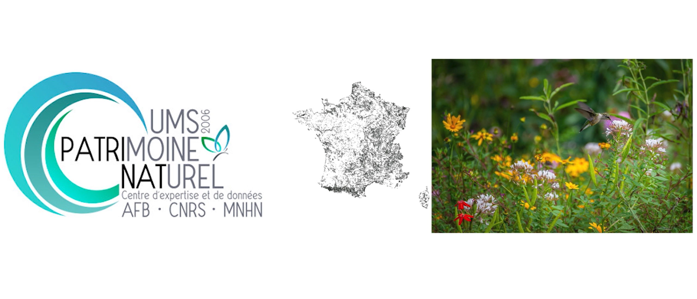

Commandé par l'UMS PatriNat, unité sous la tutelle du Muséum National d'Histoire Naturelle, ce projet consiste essentiellement au développement un viewer cartographique pour visualiser des données géographiques représentant des zones de biodiversité françaises que l'UMS PatriNat souhaite faire découvrir au grand public.
Capture d'écran de notre viewer - En voir plus dans la vidéo

Ce projet a été commandé par l'UMS PatriNat (gauche), pour afficher des couches (centre) représentant la bidiversité (droite) en France
Présentation en vidéo de notre viewer